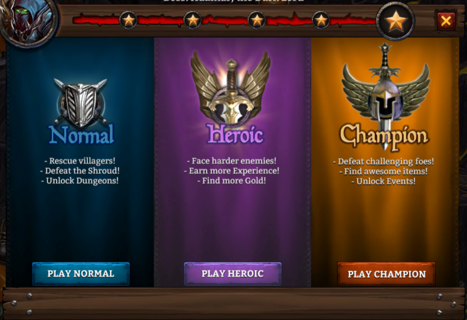

Pályák
Az általános pályáknak 3 különböző nehézségi szintje van: Normal, Heroic, Champion. Kis szinten egyedül a Normal vihető ki könnyen, utána már könnyebb csapatban tovább haladni. Addig nem kezdhető el a Heroic pálya. míg nem teljesítettük az összes Normal pályát legalább egyszer. Ha az összes Normal-on végig mentünk akkor nyílik meg a Heroic szint és emellett a Dungeon is. Így van ez a Campion pályával is csak akkor használható, ha az összes Heroic-on végig mentünk. A Champion pályák végeztével nyílik meg az Event. Érdemes mindent felvenni, amit az adott pálya dob, még ha nem is jobb, mint az éppen használt felszerelés, és a városba visszaérkezve eladni azt, így növelve az arany mennyiséget. Ha elég pénzünk van akkor a felvett tárgyakat össze is lehet kovácsolni, így eggyel nagyobb szintű tárgyat tudunk készíteni. Ha teljesítünk egy pályát akkor nő a teljesítettségi szintje, ezeknek összesen 5 szintje van, az első 4 elérésénél 5 gyémántot kapunk jutalmul, az utolsónál viszont 50 darabot. Mindegyik végén egy főgonoszt kell legyőzni ahhoz, hogy teljesítsük az adott pályát. Az első 5 nem ad ajándékcsomagot, azonban a következők után már jár, ez mind a 3 szinten más, Championon kapható a legjobb láda.
Tournament
2 heti rendszerességel van megrendezve, minden második héten más felszerelést kaphatunk. A lényege: 9 pályát kell teljesíteni, ez négy nehézségi szinten érhető el: Bronze, Silver, Gold, Platinum, ezek közül a Bronze event felszerelések nélkül is teljesíthető, a Silverhez legalább Silver event tárgyak kellenek, a Gold és a Platinum teljesítéséhez vagy egy erős játékosra van szükség, akinek meg van az összes Gold ruhája, vagy pedig csapatban kell megpróbálkozni vele. Ahhoz, hogy egy pályát el lehessen indítani, szükség van Valor Tokenre, ez a belépő, amiből 10 darabra van szükség. A maximum belépő 30 darab, és ez idővel újratölt, ha lenullázod.
A pálya teljesítése után 3 dobozt kapunk, amiket ki lehet nyitni, tartalmaznak tapasztalat pontot, az adott karakternek a képességeihez rúnát, illetve egy ékszert. Az utóbbi tartalmazza a legfontosabbat, a speciális köveket, amiket ideális esetben meg is kapunk a kinyitása során. A rendszer lényege, hogy össze kell gyűjteni mind a 9 követ, ezeket Level 5-ös szintre kell húzni és ezek után vehetõ ki érte a speciális nyeremény. Ezeket többször is igénybe lehet venni. A nyeremények: zászló, öv vagy trófea lehet, ami váltakozik 2 hetente. Egy nyeremény kiváltása során kapunk mellé még Merit Coinokat, amibõl lehet venni akár 30,6%-os gold find-os félhold követ.
- Superior: 10 Tournament Merit Coins
- Epic: 30 Tournament Merit Coins
- Legendary: 60 Tournament Merit Coins
- Artifact: 120 Tournament Merit Coins
- Relic: 240 Tournament Merit Coins
| Silver | Gold | Platinum | Elite | |
|---|---|---|---|---|
| Megrendezése | 2 heti rendszerességel, 14 nap után a következő eventen más felszerelést lehet kapni | |||
| Szükséges minimum power | 2300 | 52000 | 73100 | 73100 |
| Szükséges token (belépő) | 9 | 12 | 15 | 25 |
| Nehézség | Gyorsan teljesíthető | Nehezebben teljesíthető | Erős felszerelés szükséges | Platinum szettre van szükség |
| Felszerelés darab | 8 | Nem ad ilyet | ||
| Felszerelés fajtája | ékszer, fegyverzet és megjelenés | |||
| Felszerelés neve | Artifact | Relic | Mythic | |
| Felszerelés színe | piros | kék | sárga | |